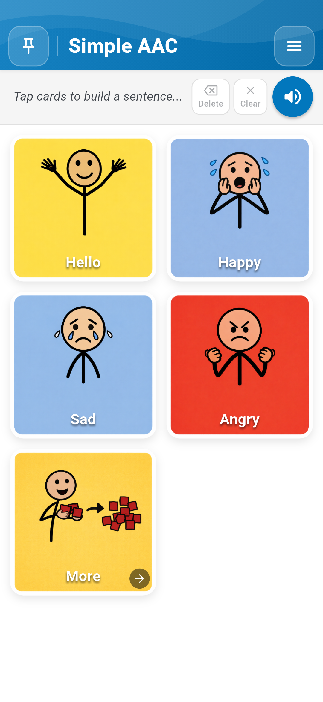
Simple AAC Sri Lanka is an augmentative and alternative communication (AAC) platform engineered specifically for non-verbal children, individuals with autism (ASD), speech delays, aphasia, or stroke recovery. Built with an offline-first philosophy, Simple AAC provides instantaneous speech playback in English, Sinhala, and Tamil without requiring any internet connection or cloud subscription.
When you launch Simple AAC, you are greeted by the clean, calming default Blue Theme designed to maximize readability and reduce sensory overstimulation. The interface consists of three primary areas:

Communication begins with a single touch. Simple AAC provides immediate multi-sensory feedback:
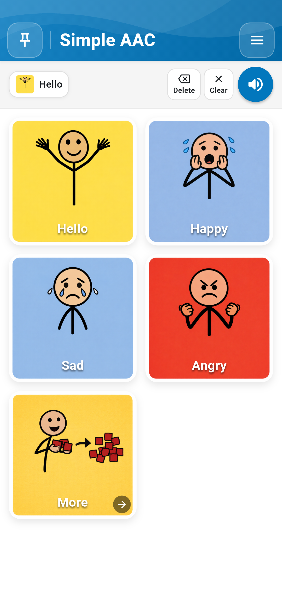
Users can express complex thoughts by tapping cards sequentially (e.g., "Hello" + "Happy"). The Sentence Composer Bar provides three primary actions:
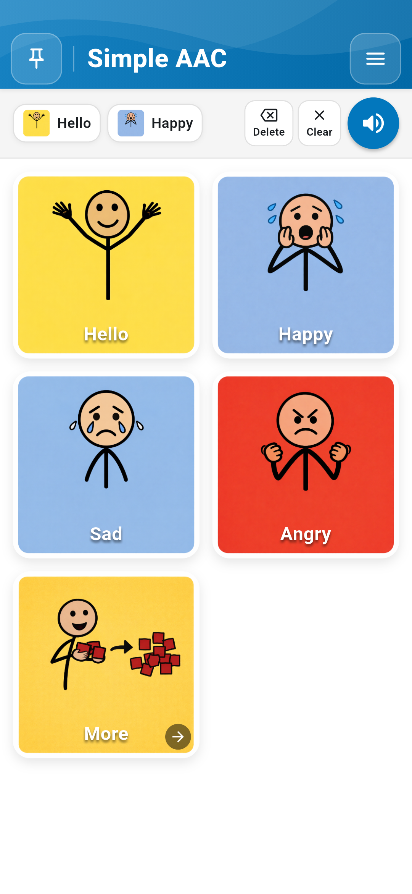
Every individual communicates differently. Simple AAC allows caregivers, speech therapists, and educators to fully personalize every card's imagery, labels, and audio.
To customize cards, tap Menu (top right) → Enable Edit Mode. Red trash-can badges appear on cards, and an Add New button displays at the top. Tapping any card opens the comprehensive Edit Card Dialog.
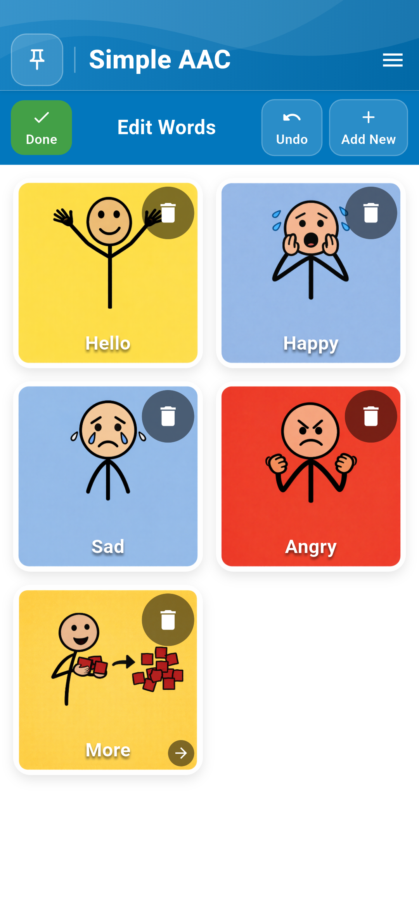


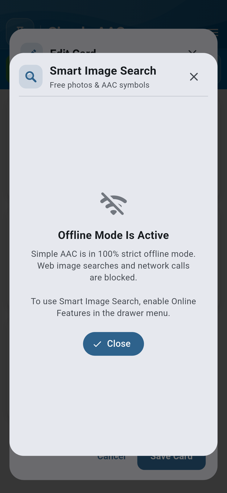
Simple AAC supports Sri Lanka's official languages with simultaneous trilingual labels: English (e.g., Hello), Sinhala (හෙලෝ, සතුටුයි, වතුර), and Tamil (வணக்கம், மகிழ்ச்சි, தண்ணீர்). For children who respond best to familiar family voices, caregivers can record custom audio directly in the editor, which takes precedence over synthesized speech.

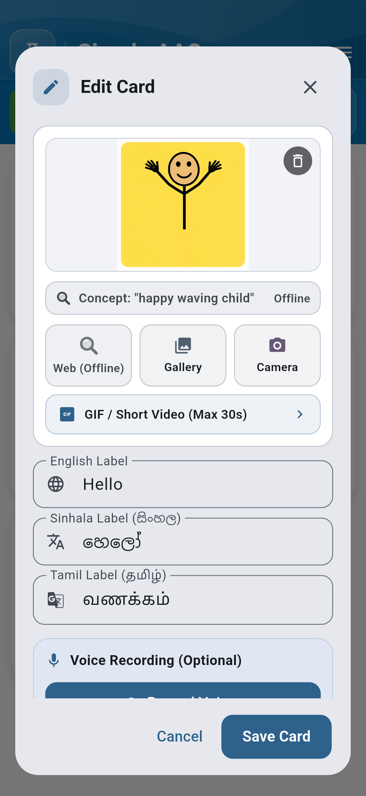
Visual learners and individuals with autism frequently comprehend dynamic actions (such as jumping, drinking, or washing hands) significantly better through motion than static images. Simple AAC includes a dedicated high-performance GIF engine that loops smoothly without draining battery power.
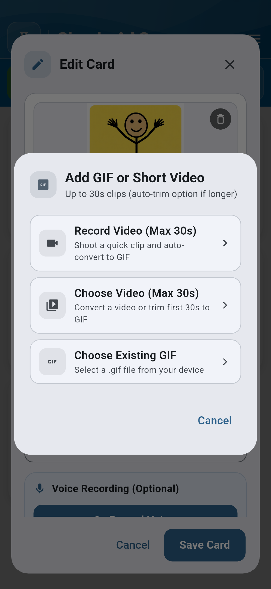

Caregivers can record short video clips (up to 30 seconds) of actual therapies, routines, or sign language gestures, and the app automatically converts them into lightweight, battery-efficient animated loops.
As vocabulary expands, cards can be organized into categories such as Feelings, Food & Drink, School, and Activities. Tapping a folder card smoothly navigates into the category deck while keeping the sentence composer bar persistent at the top.
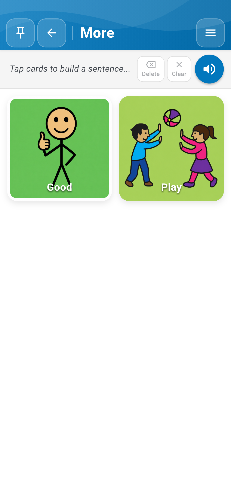
Access the Settings Drawer by tapping the top-right Menu button. Simple AAC v1.1.0 introduces redesigned visual Color Pickers equipped with real-time interactive preview canvases.
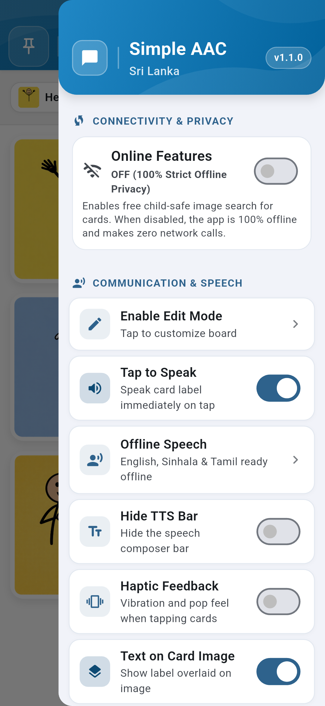
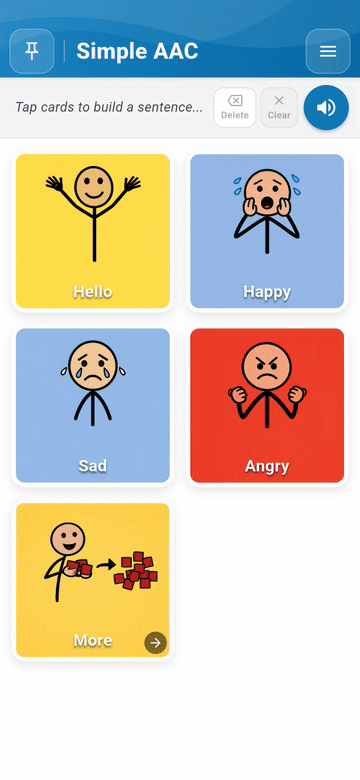
Customize the primary app color, global text color, and board background with real-time contrast previews:
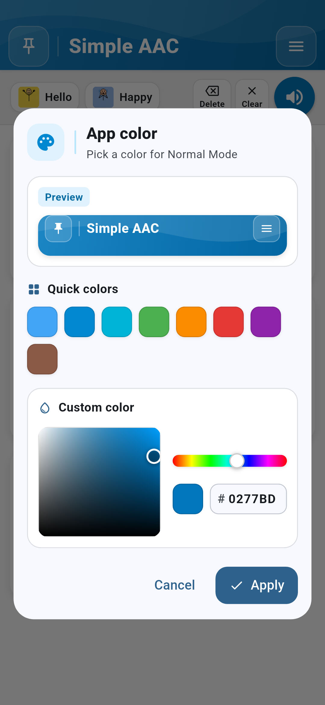

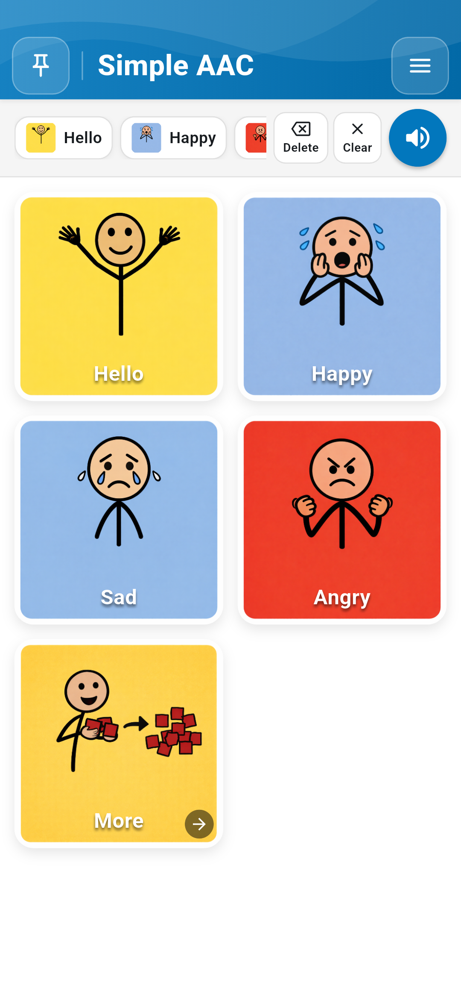
For users with color vision deficiency, Simple AAC provides a certified Color-Blind Safe Mode exceeding WCAG AAA contrast standards. The Haptic Feedback switch delivers tactile reinforcement on every tap.
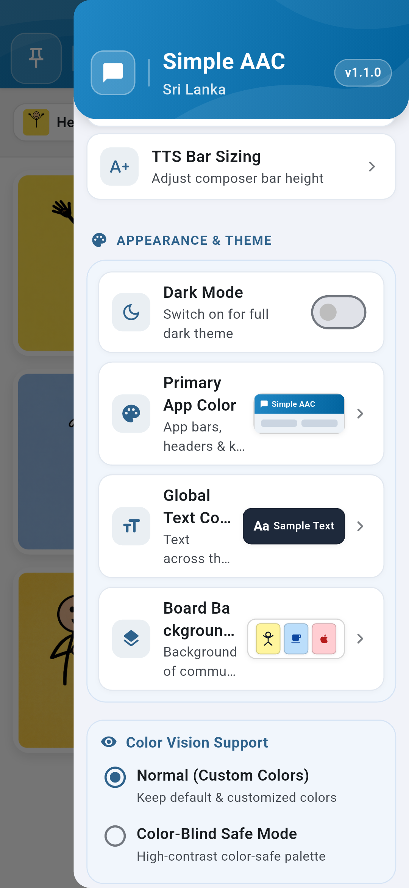
Accidental taps or exploration can inadvertently alter settings or delete cards. Tap the Pin Board button (top left) to set a 4-digit security PIN. When locked, the Settings Drawer and Edit Mode are completely disabled, allowing users to communicate safely without risking data alteration.

Simple AAC operates entirely on-device. Personal photos, voice recordings, and communication logs are never transmitted to external servers.
Downloads folder.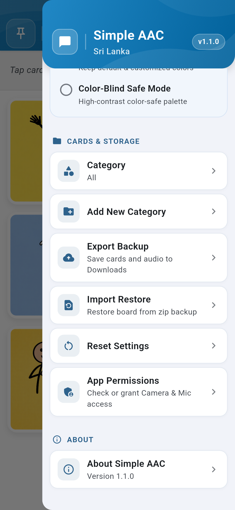
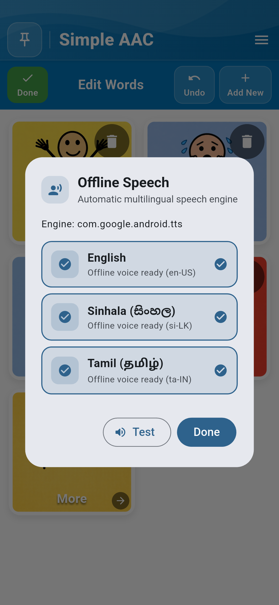
aac_cards_v1.json with automated .bak redundancy). Backups are verified up to 1,000+ cards with full media integrity.
Simple AAC Sri Lanka • Version 1.1.0 • Empowering voices with dignity, independence, and reliability.